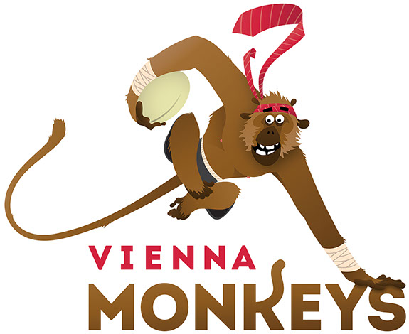
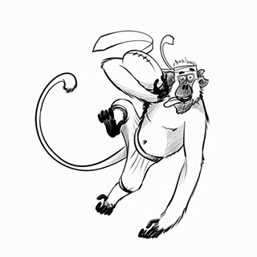
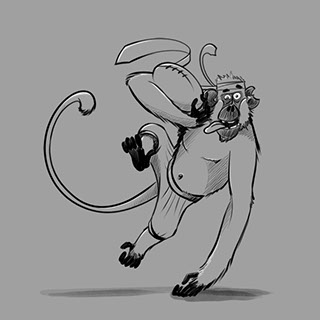
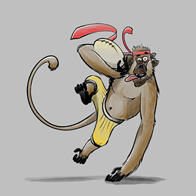
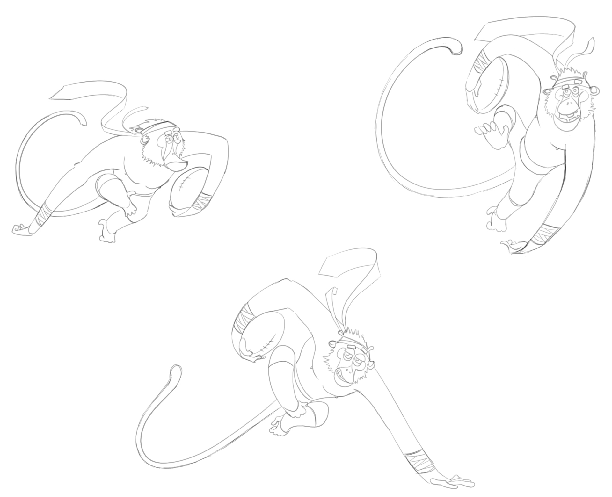
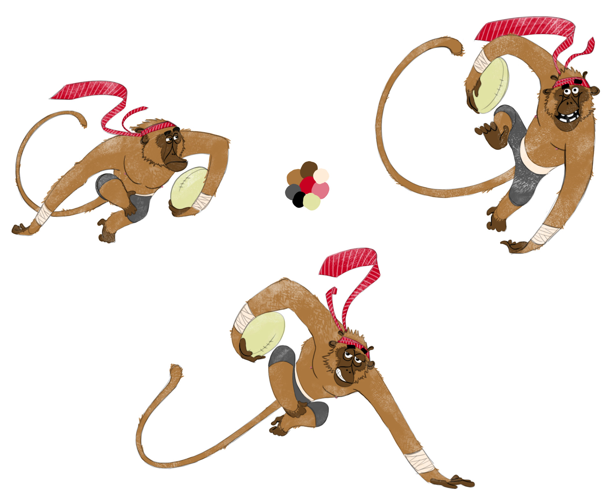
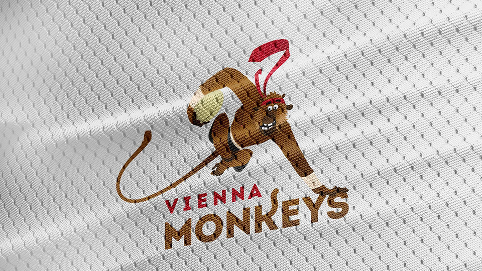

VIENNA MONKEYS
Ganz im Stile der großen College-Sport-Vereine wünschte sich der Wiener Expat Rugbyverein 'Vienna Monkeys' ein Logodesign. Doch damit nicht genug - ein Maskottchen muss her und es muss natürlich Logocharakter haben! Illustrationstechnisch keine leichte Aufgabe, da zu kleinteilige Elemente nicht für Logos geeignet sind und das ganze auch noch eine einprägsame Silhouette haben soll. Doch was gibt es schöneres, als in Meetings ständig lustige Affen zu scribblen ;)
Während des Briefings entstand schon die erste Skizze - die Richtung war schnell klar:
dynamisch, lustig, schwungvoll und gerne auch etwas Banane. Rugby in a nutshell.





Verschiedenste Posen, Gesichtsausdrücke und Farbschemen wurden ausprobiert, bis der wiener Rugby-Affe seine finale Form fand. Nun schmückt er fröhlich grinsend Spielertrikots.
